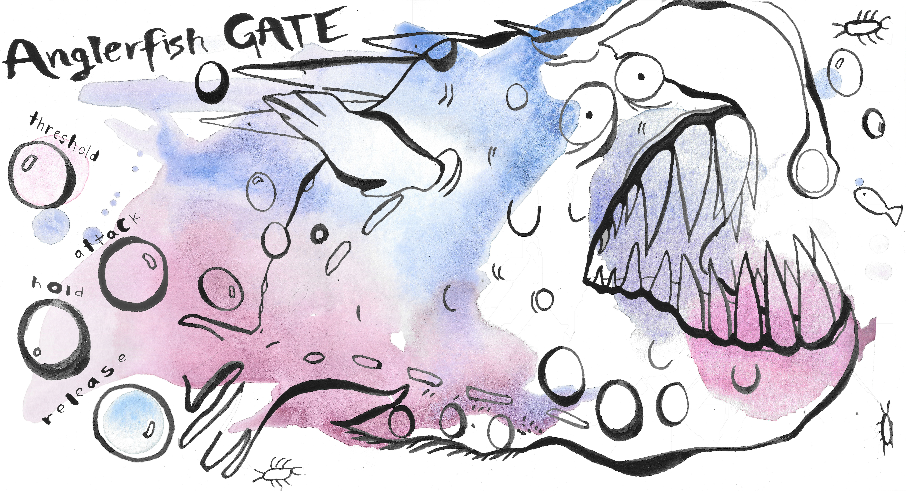

<!DOCTYPE HTML>
<!--
	Striped by HTML5 UP
	html5up.net | @ajlkn
	Free for personal and commercial use under the CCA 3.0 license (html5up.net/license)
-->
<html>
<head>
	<title>Nothing here right now.</title>
	<!-- <meta charset="utf-8" />
	<meta name="viewport" content="width=device-width, initial-scale=1" />
	<link rel="stylesheet" href="assets/css/main.css" /> -->
</head>
	<!-- <head>
		<title>Walker Davis Music</title>
		<meta charset="utf-8" />
		<meta name="viewport" content="width=device-width, initial-scale=1" />
		<link rel="stylesheet" href="assets/css/main.css" />
	</head> -->
	<!-- <body>

			<div id="content">
				<div class="inner">

					<article class="box post post-excerpt">
						<header>
							<h2>Walker Davis Music</h2>
							<p>Beats, Saxophone, Creative Tools, Tutorials.</p>
						</header>
					</article>

						<article class="box post post-excerpt">
							<header>

								<h2>Ocean Plug-Ins in Development</h2>
								<p> 	VST/AU's developed in JUCE - Available June 2018</p>
							</header>


							<a href="#" class="image featured"></a>
							<p>
                Beautiful water color GUI art by Jenina Castro.
								<br>
								<br>

								March 10,  2018
							</p>
						</article>

							<article class="box post post-excerpt">
								<header>

									<h2>The Alc-Man</h2>
									<p> A Super Hero Action/Comedy short film by Hiroki Ohsawa</p>
								</header>


								<a href="#" class="image featured"></a>
								<p>
									Audio Editing and Mixing by Walker Davis.
									<br>
									Coming out June 2018
									<br>
									<a href="https://www.indiegogo.com/projects/the-alc-man-movie-action#/" target="_blank">Hiroki Ohsawa</a>

									<br>
									<br>
									February 26,  2018
								</p>
							</article>


						<article class="box post post-excerpt">
							<header>
								<h2>YIKES EP - Out now!</h2>
							</header>

							<a href="#" class="image featured"></a>
							<p>
								<a href="https://geo.itunes.apple.com/us/album/yikes-ep/id1272877664?mt=1&app=music" style="display:inline-block;overflow:hidden;background:url(//linkmaker.itunes.apple.com/assets/shared/badges/en-us/music-lrg.svg) no-repeat;width:110px;height:40px;background-size:contain;"></a>
								<br>
								<br>
								<iframe src="https://embed.spotify.com/?uri=spotify%3Aalbum%3A1XMBdn01MoYIzgeDyHRamL" width="300" height="380" frameborder="0" allowtransparency="true"></iframe>
								<br>
								<br>
								August 17,  2017
							</p>
						</article>

				</div>
			</div>

			<div id="sidebar">
					<h1 id="logo"><a href="index">Walker Davis Music</a></h1>

					<nav id="nav">
						<ul>
							<li><a href="projects">Projects</a></li>
							<li><a href="tools">Tools</a></li>
							<li><a href="academics">Academics</a></li>
						</ul>
					</nav>
					<ul id="copyright">
						<li>&copy;walkerdavismusic</li>
						<li><a href="http://www.beethovenboy.com" target="_blank">Beethovenboy Productions</a></li>
						<li><a href="https://www.linkedin.com/in/walker-davis-423a39129/" target="_blank">LinkedIn</a></li>
						<li><a href="downloadables/WalkerDavisResApril2018.pdf" target="_blank">CV</a></li>
					</ul>

			</div>

			<script src="assets/js/jquery.min.js"></script>
			<script src="assets/js/skel.min.js"></script>
			<script src="assets/js/util.js"></script>
			<script src="assets/js/main.js"></script>

	</body> -->
</html>
